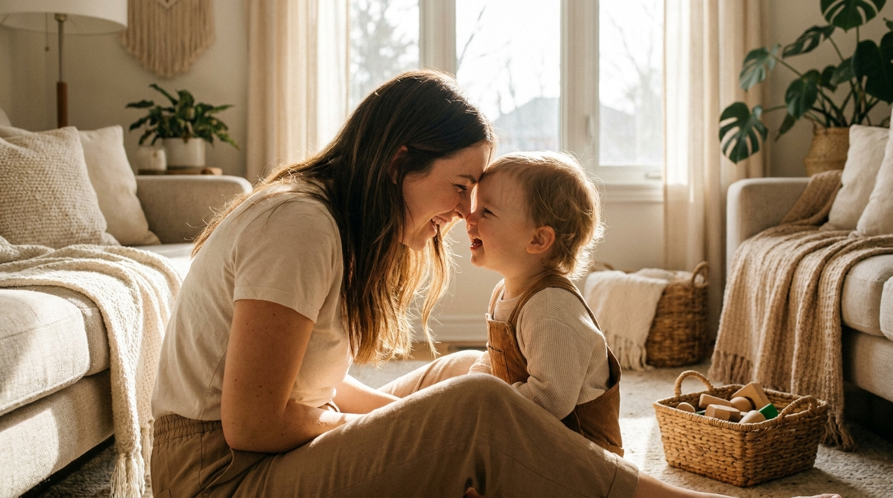

Your Child's Favorite Toy Isn't a Toy — It's You
By Leslie Dykstra · Certified Early Childhood Specialist · Williamson County, TN

In all my years working with little ones, I have never once met a parent who told me their child loved the exact same toy for five or ten years. Not once! Toys are wonderful, but most of the time they are temporary. The favorite always changes. There is only one "toy" your child never puts back in the bin: YOU.
You are their biggest teacher and their best cheerleader, all wrapped into one. And the beautiful part is that being that for your child doesn't take a special curriculum or a cart full of learning products. It just takes you, showing up.
Why are you your child's favorite?
Because you do the one thing no toy can do — you respond. You answer back. You change your voice, you break into a song out of nowhere, you make a silly face and wait for the giggle. A block just sits there. You react. That back-and-forth is exactly what a growing brain is hungry for.
Kids get bored of a toy once it stops surprising them. It does the same few things every single time. But you? You're never the same twice. We naturally reach for variety in our day — a new snack, a different route home, a fresh song — and children are the very same way. You are the most interesting thing in the room, and you always will be.
What makes "you" such a powerful teacher?
- You're interactive. You talk with your child, not at them, and that makes them feel incredibly special and seen.
- You give immediate feedback. When they point and say a word, you light up and say it right back. That little loop is how language grows.
- You follow their lead. A toy can't notice that your child is suddenly fascinated by bugs. You can — and you can run with it.
- You bring the feeling. Learning sticks best when it's wrapped in warmth. That's your specialty.
But don't kids need toys too?
Of course they do! Toys have a real and wonderful place. The best ones are open-ended — blocks, dolls, play kitchens, dress-up clothes — because they hand the imagining back to your child. If you'd like a shortlist of toys that truly build skills, I put one together here: the best educational toys for ages 3–8.
The point isn't to toss the toys. It's to remember that the most valuable thing in the room is already you. A toy plus you is where the magic happens. Narrate the block tower as it grows. Take an order at the play kitchen and gasp when the pretend soup is delicious. Suddenly a quiet toy becomes a whole conversation.
Simple ways to be your child's favorite "toy" this week
None of these cost a thing. They just cost a few minutes of your full attention.
- Get down on the floor. Sit at their level and let them show you what they're playing. Your interest tells them their world matters.
- Be the audience. Watch them jump, spin, or build and cheer them on. Every child loves a grown-up who is truly delighted by them.
- Sing the ordinary. Make up a silly song about brushing teeth or putting on shoes. Your changing voice is more fun than any gadget.
- Say it back. When your little one says "doggy!" you say, "Yes, a big brown doggy!" You just added words, and they felt heard.
- Narrate together. Talk through your day out loud — which apple to pick at the store, why the sky looks gray. Everyday moments are learning moments.
What if I'm not always available to play?
You don't need hours, and you don't need to feel guilty. Ten focused minutes of real, face-to-face attention will do more than a whole afternoon of half-listening. Fold the laundry together and chat about the colors. Talk in the car. Tell a story at bedtime. Those little pockets of connection are not "less than" — they add up to everything.
And if you'd ever like a hand knowing what to focus on for your child's age and stage, a free 15-minute conversation with me is a lovely place to start.
Frequently asked questions
My child would rather play alone sometimes. Is that a problem?
Not at all. Independent play is healthy and important — it builds focus, imagination, and confidence. The goal isn't to hover over every moment. It's to make sure the connected, face-to-face time is there too, because that's where language and warmth grow fastest.
I work full-time and can't play all day. Am I falling behind?
No. You don't need hours — you need moments. Ten minutes of real, face-to-face attention does more than a whole afternoon of half-listening. Talk while you fold laundry, sing in the car, tell a story at bedtime. Those small pockets add up to everything.
Does this mean screens are bad for my child?
Screens aren't the enemy, but they can't do what you do. A screen talks at your child; you talk with them. Keep the back-and-forth of real conversation and play front and center, and let screens stay a small part of the day. Here's my balanced take on screen time and early learning.
Want to see your child thrive?
If you'd like to talk about where your child is and what would help them most, book a free 15-minute consultation with Leslie. Little Minds, Big Futures — where every child's potential takes flight.